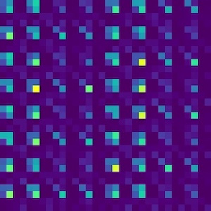

Machine Learning & Quantum Computing
"Observations not only disturb what is to be measured, they produce it."
–Pascual Jordan.
On quantum computation
The advent of quantum computing places us on the forefront of a revolution in computational power and capability. Quantum computation will have direct impacts on cryptography and cyber-security, the development of pharmaceutical drugs, sustainable energy, novel quantum materials, meteorological forecasting, and more. The greatest obstacle for the construction and use of quantum computers lies in system decoherence–environmental noise and interactions challenge our ability to construct quantum systems with many qubits (> 40). A quantum computer can be built within a circuit model by having access to a minimal “universal” set of gates. Scalable universal quantum computation hinges on the possibility of keeping the error rate of such gates below a certain threshold that is currently hard to achieve (10-6). In contrast, Clifford gates are elements of a group of quantum gates that can be implemented with arbitrarily high precision. Not surprisingly, they do not allow for universal quantum computation. Moreover, Clifford circuits can be efficiently simulated on a classical computer, showing that quantum advantage lies outside the Clifford gate model. Since Clifford gates are not universal by themselves, understanding in which ways they fail to be is paramount to understanding to what extent non-Clifford gates are needed.
Haar Versus Clifford
 Universal and Clifford circuits exhibit remarkably different behavior. This can be easily seen by representing a Clifford state via the image on the left. This image immediately reveals a large amount of structure that a Clifford state has. Simply put, universal circuits show chaotic behavior and their outputs are random states in a Hilbert space. Instead, Clifford circuits fail to be ergodic and their outputs cover a tiny (finite) portion of the Hilbert space. The chaotic/non-chaotic behavior can be revealed by several properties: Entanglement Spectrum Statistics (ESS), response to disentangling algorithms, or the adherence to moments of the probability distribution over the Haar measure. My work aims to understand the transition between outputs of universal circuits and Clifford circuits by studying how statistics on random quantum circuits affect these figures of merit as functions of the impurity of Clifford circuits through strategic doping of universal gates. I want to improve the understanding on the number and placement of universal gates needed in a quantum circuit to improve resource management and reduce the overall impact of decoherence.
A better understanding of this transition has both long-term theoretical significance and immediate practical significance. Chaotic behavior from quantum systems is known to emerge from this transition of Clifford to universal circuits, and a better understanding of this phenomenon will shed light on irreversibility at the quantum level. This work will also improve our understanding of intelligent circuit design and resource management of the, otherwise difficult to implement, universal gates, while improving stability against decoherence for our quantum computers.
Interactive Quantum Circuits
To better understand how these states are affected by random quantum circuits I've written an Interactive Quantum Circuit (IntQC) visualizer. You can download and use this visualizer through my GitHub repo.
You can learn more about this research and the Hamma research group on quantum information theory at UMass Boston by going to Professor Hamma's research page.